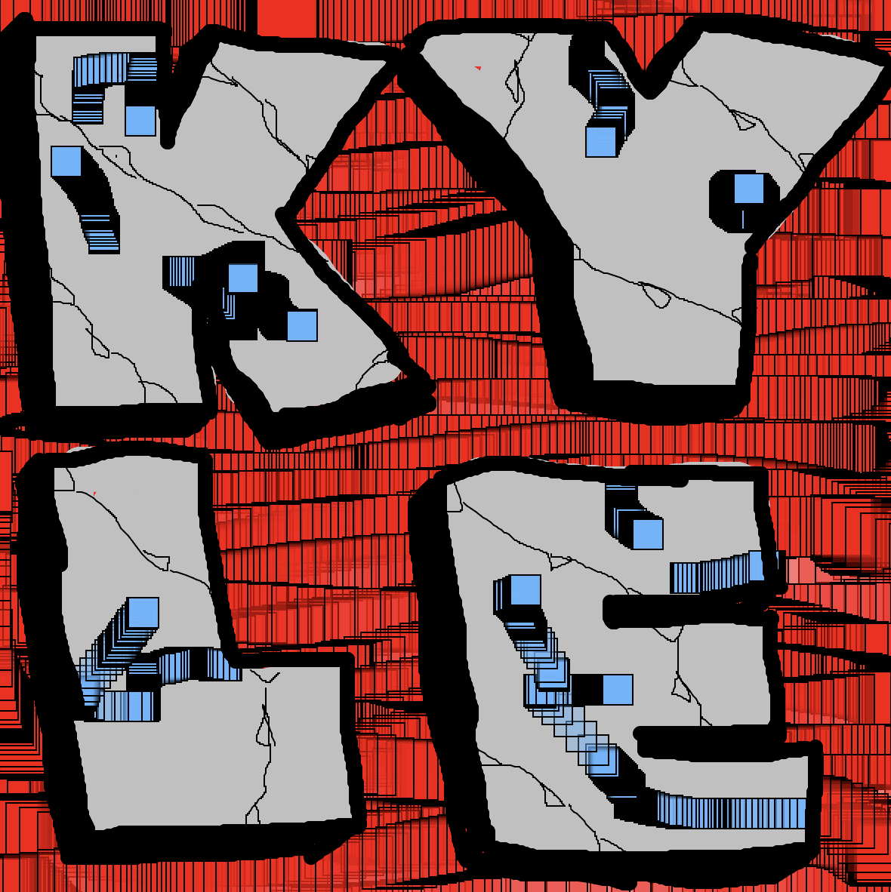

<html>
<head>
  <meta charset="utf-8">
  <meta name="viewport" content="width=device-width, initial-scale=1.0">

  <!-- PLEASE NO CHANGES BELOW THIS LINE (UNTIL I SAY SO) -->
  <script language="javascript" type="text/javascript" src="libraries/p5.min.js"></script>
  <script language="javascript" type="text/javascript" src="diyps2026.js"></script>
  <!-- OK, YOU CAN MAKE CHANGES BELOW THIS LINE AGAIN -->

  <!-- This line removes any default padding and style.
       You might only need one of these values set. -->
  <style> body { padding: 0; margin: 0; } </style>
</head>

<body>
</body>
</html>
<title>Page Title</title>
<meta charset="utf-8">
  <meta name="viewport" content="width=device-width, initial-scale=1">
  <link href="https://cdn.jsdelivr.net/npm/bootstrap@5.3.8/dist/css/bootstrap.min.css" rel="stylesheet">
  <script src="https://cdn.jsdelivr.net/npm/bootstrap@5.3.8/dist/js/bootstrap.bundle.min.js"></script>
</head>
<body style="background-color: lightgray;">

<div class="container-fluid">
<h1 style="color: dark gray; font-size: 50px;">Kyle Jordan</h1>
<h1 style="color: dark gray; font-size: 15px;"><Code Art></Code></h1>
<nav class="navbar navbar-expand-sm bg-light">
<ul class="navbar-nav">
<style>
a {
    color: black;
}

a:hover {
    color: black;
}
</style>
 <li class="nav-item"><a href="index.html">Go Home</a></li> 
 <li class="nav-item"><a href="identity.html">Identity</a> </li>
 <li class="nav-item"><a href="remix.html">Remix</a> </li>
 <li class="nav-item"></li><a href="3d.html">3d</a> 
 <li class="nav-item"></li><a href="netart.html">Net Art</a> 
</ul>
</nav>

<a href="default.asp">
</a>
<p style="color: charcoal;">For this assignment, I chose to adjust the drawing system to give users the right tools to draw their names in different styles, whether they prefer simple block letters or a more loose approach. I added cracks throughout the letters to represent my experience of breaking the system while adjusting the code and losing some of my previous drawings because I didn’t know how to save my work. Compared to the original starter, I mainly changed the colors of the tools and adjusted the stroke weights. I also experimented with different line thicknesses and textures to create more contrast. I used tool five for a red textured background, tool four to draw and fill in the letters, and tool three to add thin black cracks. I also used tool seven to add light blue designs inside the letters. These custom tools give users everything they need to create interesting letters with different shadows, highlights, and textured fills. 
</p> 

</div>

</body>
</html>